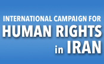

|
|
|
Browsing
Contact Us |
Campaigners |
Face to Face |
Tribune |
Interview |
News |
On the Web |
One Million |
Report
Farsi | Français | German | Italian | Spanish | العربية Also in this section
|
 International Organizations Express Solidarity with Iranian Women for June 12thTuesday 10 June 2008 In a statement issued by the International Campaign for Human Rights in Iran, nearly 50 international human rights and women’s organizations have expressed their solidarity with Iranian women and the women’s movement, in recognition of June 12th, the national day of solidarity of Iranian women, in objection to discriminatory laws. The statement has been signed by well-respected and internationally recognized organizations, such as Human Rights Watch, Amnesty International, AWID, the Women’s Learning Partnership, the Observatory for the Protection of Human Rights Defenders, Women Living Under Muslim Laws and Women for Women’s Human Rights, to name a few. The organizations represents groups working on human rights and women’s rights internationally, in Africa, Asia, North and South America. Besides expressing solidarity with Iranian women and women’s rights activists, the statement urges the Iranian government to end its harassment of equal rights defenders and to drop all charges against them in relation to their peaceful activities in support of women’s rights. The statement also urges the Iranian government to take concrete steps designed to address and rectify legal discrimination against women. The full statement appears below: STATEMENT IN SUPPORT OF IRANIAN WOMEN ON THE ANNIVERSARY OF 12 JUNE 2006 DEMONSTRATION (10 June, 2008) We, the undersigned, representing international women’s and human rights organizations, express our solidarity with Iranian women, on 12 June 2008. This is the day identified by women’s rights activists in Iran as their national day of solidarity in objecting to laws that discriminate against women. Three years ago, on this day, women’s rights activists organized an unprecedented protest in front of Tehran University, demanding that laws which discriminate against women be revised. They pledged to keep up their activities until their demands were met by authorities. On 12 June 2006, Iranian women’s rights activists took to the streets again and planned a similar protest in Haft-e Tir Square, in Tehran, with similar objectives and demands. The protest was violently broken up and over 70 persons arrested. This was the first major crackdown against peaceful women’s activism in Iran. Since then, scores of women’s rights activists in Iran have been summoned, charged, arrested and sentenced in relation to their peaceful activism and their demands for equality. Last year, because of security pressures, women’s rights activists celebrated their day of solidarity in their private homes. But as witnessed in the continued summonses to court and persecution of activists involved in the One Million Signatures Campaign, the security forces won’t even tolerate the convening of meetings by activists in their private homes. On this day, we the undersigned thus want to express our solidarity with women’s rights activists in Iran and send them and their government the message that the international community is watching. We are watching closely their struggle for equality and admire their creativity, persistence and determination under difficult circumstances. We urge the Iranian government to stop its harassment of equal rights defenders, to drop all charges against activists who have peacefully advocated for the human rights of women, especially those involved in the One Million Signatures Campaign, to allow women’s rights activists to use civil means to address their concerns about discriminatory Iranian laws, and to raise awareness about their concerns among the public. Lastly, we urge the Iranian authorities to take concrete steps to bring laws governing the lives of women in line with international human rights standards, and in line with Iran’s own international commitments. We urge them to recognize that, while Iranian women have achieved a great deal socially, laws lag far behind the realities of women’s lives in Iran. And in closing, we urge the Iranian government to allow women to celebrate their day of solidarity unimpeded. Endorsed By: 1. Action Now, Kenya 2. AIDOS, Italy 3. Aim for Human Rights, the Netherlands 4. Amargi Woman Cooperative, Istanbul 5. Amnesty International 6. Asian Forum for Human Rights and Development, Thailand 7. Asia Pacific Forum on Women, Law and Development (APWLD) 8. Association for Women’s Rights in Development (AWID) 9. BAOBAB for Women’s Human Rights, Nigeria 10. Campaign for Peace and Democracy, New York 11. Center for Women’s Global Leadership (CWGL) 12. Diakonia, Colombia 13. Education Society of Malopolska, Nowy Sacz, Poland 14. Feminists of Ankara Initiative 15. Forum for Human Rights, Hyderabad, India 16. Forum for the Empowerment of Women, South Africa 17. Foundation For Women’s Solidarity, Ankara 18. Front Line 19. Fuerza de Mujeres Wayce: Wayuu Women Force, Colombia 20. Human Rights First 21. Human Rights Watch 22. Information Monitor (Inform) 23. Interdisciplinary Group for Human Rights, Colombia 24. International Association of Women Ministers 25. International Campaign for Human Rights in Iran 26. International Friends for Global Peace, Sri Lanka 27. International Service for Human Rights (ISHR) 28. ISIS-Women’s International Cross-Cultural Exchange (ISIS-WICCE) 29. KAGİDER , Women Entrepreneurs Association of Turkey 30. Kaos GL Association, Ankara 31. Komnas Perempuan, National Commission on Violence Against Women, Indonesia 32. MADRE (an international women’s human rights organisation) 33. MULABI, Latino American Sapce Working on Sexualities and Rights, Colombia 34. People changing the World, Kyrgystan 35. The Global Campaign Stop Killing and Stoning Women! 36. The Observatory for the Protection of Human Rights Defenders, a joint programme of the World Organisation Against Torture (OMCT) and the International Federation of Human Rights (FIDH) 37. The Latin American and Caribbean Committee for the Defense of Women’s Rights (CLADEM) 38. Unrepresented Nations and Peoples Organisation (UNPO) 39. Urgent Action Fund for Women’s Rights (UAF) 40. Women Against War, United States 41. Women for Women’s Human Rights (WWHR) – New Ways, Turkey 42. Women’s Initiative for Gender Justice (WIGJ) 43. Women Learning Partnership 44. Women Living Under Muslim Law 45. Women’s Resource Center, Sri Lanka 46. WOREC, Nepal |